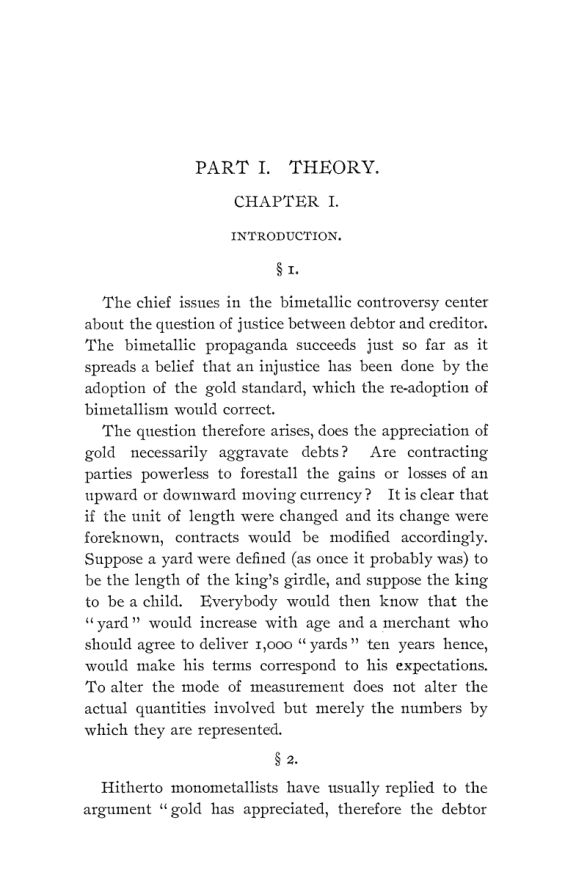

Fisher, 1896: o juro que antecipa o valor da moeda
Leitura: 12 min
Em 1896, Irving Fisher mostrou que credores e devedores embutem no juro a valorização ou a desvalorização esperada da moeda, e testou a ideia com títulos em ouro, em papel e em prata.


Poucos meses antes do livro, o sindicato Belmont-Morgan ofereceu ao governo dos Estados Unidos uma escolha. Emprestaria cerca de 65 milhões de dólares a 3% ao ano se o pagamento fosse em ouro, ou a uma taxa maior se fosse em “coin”, moeda metálica que a lei talvez permitisse pagar em prata. Todos sabiam, escreve Irving Fisher, que o adicional vinha da mera possibilidade de cunhagem livre de prata. Nenhum banqueiro precisou de teoria para cobrar por isso.
A cena abre o segundo capítulo de Appreciation and Interest, publicado em 1896 no volume 11, nº 4, das Publications of the American Economic Association, em 98 páginas. Fisher, que assina o prefácio em New Haven, apresentara a ideia em resumo na reunião da associação em Indianápolis, em dezembro de 1895. O alvo era o centro do debate bimetalista: a valorização do ouro roubava os devedores? A resposta do livro é que não necessariamente, porque quem prevê a mudança no valor da moeda a embute na taxa de juros.
O que o cinto do rei tem a ver com dívidas?
Fisher começa com uma imagem. Suponha que a jarda fosse definida como o comprimento do cinto do rei, e que o rei fosse uma criança. Todos saberiam que a “jarda” cresceria com a idade, e o comerciante que prometesse entregar 1.000 jardas dali a dez anos ajustaria o preço à expectativa. Mudar a unidade de medida não muda as quantidades, só os números que as representam.
Monometalistas e bimetalistas brigavam havia anos sobre o próprio fato da valorização. Os bimetalistas a provavam pela queda dos preços; os monometalistas respondiam que os salários tinham subido. Os dois lados supunham, porém, que um padrão justo teria de ser invariável. Fisher desfaz a premissa:
“um padrão, para ser perfeito, não precisa ser invariável” (“a standard to be perfect need not be invariable”)
Basta que seja confiável, isto é, que as partes consigam prever nele seu futuro econômico com a mesma precisão que em qualquer outro. E a correção não exige mexer no principal da dívida. O outro elemento do contrato, a taxa de juros, faz o trabalho.
Quanto o juro precisa mudar para compensar a moeda?
O exemplo numérico usa dois padrões, ouro e trigo. Hoje um alqueire (bushel) de trigo vale um dólar; sabe-se que daqui a um ano valerá 96 centavos. Quem toma 100 dólares a 8% deve 108 dólares no fim do ano, o equivalente a 112,5 alqueires. Logo, 8% em ouro equivalem a 12,5% em trigo: a depreciação de 4% do trigo é compensada por um juro 4,5 pontos maior.
Em palavras: o juro no padrão que se deprecia é a soma de três termos, o juro no padrão que se valoriza, a própria taxa de valorização e o produto dos dois. É a relação que os manuais hoje chamam de equação de Fisher. Ele propõe uma forma ainda mais simples: a razão de divergência entre os padrões é igual à razão entre seus “montantes”, aquilo em que cada unidade emprestada se transforma ao fim do período. E corrige os antecessores. John Bates Clark subestimou a compensação por não compor os termos; um panfleto do século XVIII também errou a conta.
Quem viu isso antes?
Fisher não reivindica a ideia. O registro mais antigo que encontrou é um panfleto anônimo publicado em Boston em 1740, sobre as moedas das colônias britânicas na América. Entre o outono de 1737 e o de 1739, uma grande emissão de papel de Rhode Island levou a prata de 26 a 27 xelins por onça para 29 xelins. O autor calcula uma perda de 7% do principal e conclui que o credor precisaria de 13% de juro “natural” para se proteger, quando o juro legal era de 6%.
Fisher cita ainda John Stuart Mill, Jacob de Haas Jr., de Amsterdã, e o próprio Clark. Sua contribuição foi dar à ideia forma quantitativa, testá-la com estatísticas e aplicá-la à teoria do juro.
O juro pode ser negativo?
A fórmula parece permitir. Se o juro em trigo é 8% e o ouro se valoriza 20% ao ano em relação ao trigo, o juro em ouro teria de ser de menos 10%. Fisher responde que isso é impossível com uma moeda que se pode entesourar sem trabalho, risco ou despesa: quem tem ouro o guardaria em vez de emprestá-lo com perda. O piso é zero. Pelo mesmo motivo, a valorização esperada da moeda não pode superar o juro nela. O caso familiar é a terra: com juro de 5%, o preço de um lote não pode subir mais de 5% ao ano, salvo se a alta for imprevista, porque todos o reteriam.
Com um padrão perecível, como morangos emprestados no verão e pagos no inverno, o piso desaparece. Há até um caso real: como manter terra exige pagar impostos, o juro medido em “acres” de terra especulativa é muitas vezes negativo.
Os mercados de fato anteciparam?
A segunda parte testa a teoria com cotações. O primeiro teste usa dois títulos do governo americano: os “currency sixes”, pagáveis em papel-moeda, e títulos de 1907 pagáveis em moeda metálica. Em janeiro de 1870, o investidor obtinha 6,4% em ouro, mas aceitava 5,4% em papel. O motivo era a esperança da retomada da conversibilidade: justamente por estar tão depreciado, o papel prometia valorizar-se. Só em 1878, quando essa perspectiva acabou, a ordem se inverteu.
Depois o sinal se inverteu de novo. Em 1894, com o temor da prata livre, o título em papel rendia 3,5%, contra 2,7% do título em moeda metálica.
O segundo teste é mais limpo: títulos do governo da Índia negociados em Londres, uns em ouro, outros em prata, a “rupee paper”. Mesmo emissor, mesma garantia, mesmo mercado; muda só o padrão. Antes de 1875 os rendimentos pouco diferiam. Quando o câmbio indiano começou a cair, a distância abriu e, em um dos anos, chegou a 1,1 ponto. A antecipação, porém, foi parcial: a valorização estimada pelos investidores foi pouco mais de um terço da efetiva.
Juro alto é sinal de dinheiro caro?
O terceiro teste percorre sete mercados: Londres, Nova York, Berlim, Paris, Calcutá, Tóquio e Xangai. Primeiro, um achado lateral: em 17 de 21 comparações, os anos de preços altos tiveram juros mais altos que os de preços baixos. Depois, o central. Somados os sete países, Fisher conta 57 casos favoráveis à tese de que preços em alta vêm com juros altos e preços em queda com juros baixos, contra 16 desfavoráveis.
O ajuste, contudo, é incompleto. Fisher converte o juro em dinheiro em juro em mercadorias, usando índices de preços. Em Londres, entre 1826 e 1829, o juro de mercado foi de 3,5%, enquanto o dinheiro se valorizava 4,2% ao ano em mercadorias. Em Nova York, na inflação de 1861 a 1865, o juro em mercadorias desceu à cifra, nas palavras do autor, fabulosamente baixa de menos 14,8%.
Daí uma crítica a nomes ilustres. Tooke, Bonamy Price e Jevons, segundo Fisher, confundiram juro nominal alto ou baixo com juro real alto ou baixo. Price lamentava, em 1877, o crédito barato e o comércio deprimido. Mas o juro em mercadorias em Londres entre 1874 e 1879 fora de 7,1%. Seria espantoso, comenta Fisher, se o comércio não encolhesse.
Por que a imprevisão gera ciclos?
A passagem mais moderna trata dos “ciclos de crédito”. Se todos errassem igualmente a previsão de uma alta de preços, haveria só transferência de riqueza do credor para o devedor. Mas a previsão é desigual. Os mais perspicazes tendem a ser os tomadores, os “capitães da indústria”, a quem a sociedade delega a gestão do capital justamente por preverem melhor. Com preços subindo, eles percebem antes dos credores, aceitam juros maiores e ampliam empréstimos e investimentos. Com preços caindo, o juro cai, mas não o bastante, e o negócio definha.
“a desigualdade de previsão produz superinvestimento com preços em alta e relativa estagnação com preços em queda” (“inequality of foresight produces overinvestment during rising prices and relative stagnation during falling prices”)
Com o juro perfeitamente ajustado, conclui, esses efeitos do crédito não ocorreriam: o juro, mais do que o crédito, é a variável independente principal.
O devedor foi roubado pelo ouro?
Houve perda, mas pequena. Fisher estima que o devedor inglês médio, em contratos feitos desde 1874–75, perdeu dois terços de ponto percentual ao ano, com margem de erro de um terço de ponto; nos Estados Unidos, provavelmente menos. As estimativas usuais, baseadas nos índices de Sauerbeck, davam de três a oito vezes mais. O erro, diz ele, é tratar a questão como de valorização do ouro, quando ela é exclusivamente de previsão e de ajuste do juro.
O bimetalismo tampouco corrigiria a perda. Ela atinge só dívidas não pagas, e a maior parte já passara. Empréstimos bancários e outros de curto prazo eram cerca de 60% da dívida existente. Uma desvalorização de 10% repararia exatamente as dívidas de quinze anos, mas seria pequena demais para as mais antigas e grande demais para as mais novas, que eram o grosso. O efeito dominante seria lesar o credor de hoje e de ontem.
O argumento ético é seco. Se uma casa segurada pega fogo no dia seguinte, a seguradora tem prejuízo, mas não sofre injustiça. Se pedisse alívio ao Legislativo alegando que não podia prever o incêndio, ouviria:
“Cumpra seu contrato” (“Keep your contract”)
Legislar para compensar uma queda de preços passada é errado, porque retroativo; para compensar uma queda futura é absurdo, porque não se pode sabê-la, e, se se pudesse, a lei seria desnecessária. Sólida, para Fisher, só a legislação que torne a unidade monetária menos variável.
Existe um único juro “real”?
O último capítulo recusa o atalho. Os termos “real” e “nominal” são cômodos, admite Fisher, mas insuficientes. Há tantas taxas de juros quanto padrões: em trigo, em terra, em trabalho, em renda. Mesmo numa economia estacionária, o juro de verão para inverno seria baixo em frutas e alto em gelo. E cada pessoa tem seu padrão “absoluto”: o dólar é unidade menor para o milionário que para o operário. O juro em dinheiro é apenas o representante comum de múltiplas taxas em outros padrões.
Na minha leitura
Na minha leitura, a força do texto está na troca de pergunta. O debate de 1896 queria saber se o ouro tinha se valorizado e quem devia indenizar quem. Fisher mostra que a pergunta relevante é outra: quanto da mudança foi prevista e embutida no juro. Daí sai a ideia que orienta a política monetária moderna. O que pesa para credor e devedor é o juro descontada a inflação esperada, e uma moeda previsível vale mais do que uma moeda imóvel.
A outra lição é de honestidade empírica. Fisher constrói uma teoria elegante e, em seguida, mostra que os mercados a obedecem só em parte: um terço aqui, dois quintos ali. Não esconde o resíduo; faz dele uma teoria dos ciclos. E resiste à tentação de usar a perda medida como pretexto para reescrever contratos. A reforma que defende é a que reduz a incerteza futura, não a que redistribui o passado.
Glossário
- Bimetalismo
- regime em que ouro e prata servem ao mesmo tempo de padrão monetário, a uma razão legal fixa entre os dois metais.
- Valorização (appreciation)
- aumento do poder de compra de uma moeda em relação a outro padrão, como mercadorias, trabalho ou outra moeda.
- Padrão monetário
- unidade em que se expressam preços e contratos, como o ouro, a prata, o papel-moeda ou, em teoria, o trigo.
- Juro nominal e juro real
- juro medido em dinheiro e juro medido em bens, isto é, descontada a variação do poder de compra da moeda.
- Equação de Fisher
- 1 + j = (1 + a)(1 + i): relação entre os juros em dois padrões e a valorização esperada de um em relação ao outro.
- Entesouramento
- guardar a moeda parada em vez de emprestá-la; é o que impede o juro em dinheiro de cair abaixo de zero.
- Rupee paper
- títulos da dívida do governo da Índia denominados em rúpias de prata e negociados também em Londres.
- Retomada (resumption)
- volta à conversibilidade do papel-moeda americano em moeda metálica, em 1º de janeiro de 1879.
- Índice de preços
- média ponderada de preços que mede a variação do poder de compra da moeda; Fisher usa os de Jevons e Sauerbeck, entre outros.
- Ágio (agio)
- termo de Böhm-Bawerk para o prêmio dos bens presentes sobre os bens futuros da mesma espécie, que é o juro.
Fontes
- Appreciation and Interest (pp. 1–98). JSTOR · Internet Archive (PDF)
- Sumário da edição no JSTOR: Publications of the American Economic Association, vol. 11, nº 4.
Documento em domínio público (EUA, publicado antes de 1931), via JSTOR Early Journal Content e Internet Archive. Resumo e comentário do autor deste site, sem afiliação com a American Economic Association. Encontrou um erro? Escreva: a correção é publicada no próprio texto, com data.
← Nº 49 · Hoffman, 1896: censo, mortalidade e raça nas tabelas de um estatístico Nº 51 · Hammond, 1897: o algodão que o crédito obrigava a plantar →